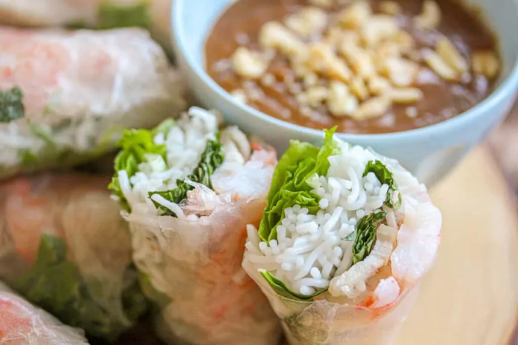

Home
Vietnamese Spring Rolls

Description
Vietnamese spring rolls are fresh, light rolls made with soft rice paper filled with shrimp, rice noodles, lettuce, and herbs.
They're usually served cold with a tasty dipping sauce like peanut or hoisin, making them perfect as a snack or appetizer.
- Rice paper
- Cooked shrimp and pork
- Rice noodles
- Lettuce
- Mint or basil
- Carrot slices
- Peanut or hoisin dipping sauce
- Dip rice paper in warm water to soften.
- Add shrimp, noodles, and veggies in the center.
- Roll it up lightly.
- Serve with dipping sauce.